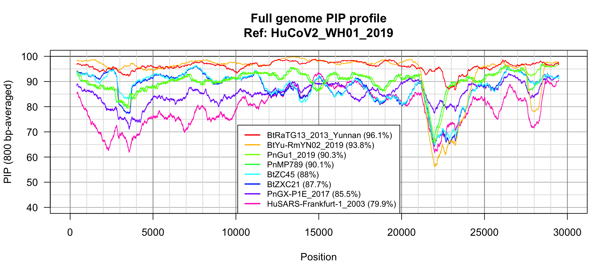
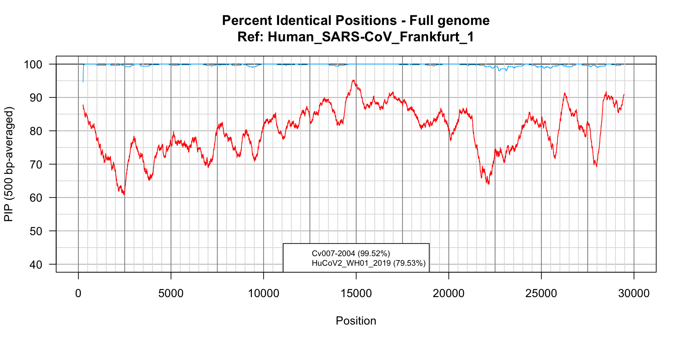

Analysis of coronavirus sequences
Jacques van Helden
2020-05-28
#### General parameters for the analysis ####
## Use (or not) GIDAID sequences
##
## A few genoes were not available in NCBI Genbank at the time of
## this analysis, and had to be downloaded from GISAID. These sequences
## can however not be redistributed, they should thus be downloaded
## manually to reproduce the full trees. Alternatively, useGISAID
## can be set to FALSE, whcih will reproduce the analysis with almost
## all the sequences of the paper.
useGISAID <- TRUE
#### Define directories and files ####
dir <- list(main = '..')
dir$R <- file.path(dir$main, "scripts/R")
#### Create output directory for sequences ####
dir$outseq <- file.path(
dir$main, "results", "S-gene", "Nto1_alignments")
dir.create(dir$outseq, showWarnings = FALSE, recursive = TRUE)
## Instantiate a list for output files
outfiles <- vector()
## Input files
infiles <- list()
## Sequence collection
## Supported:
## collection <- "around-CoV-2" # ~20 genomes
## collection <- "selected" # ~60 genomes
## collection <- "all" # ~60 genomes
collections <- c("around-CoV-2", "selected", "all")
collection <- "around-CoV-2" # ~20 genomes
## Genome dir and files
if (useGISAID) {
dir$genomes <- file.path(dir$main, "data", "GISAID_genomes")
infiles$genomes <- file.path(
dir$genomes,
paste0("genomes_", collection, "-plus-GISAID.fasta"))
} else {
dir$genomes <- file.path(dir$main, "data", "virus_genomes")
infiles$genomes <- file.path(
dir$genomes,
paste0("genomes_", collection,".fasta"))
}
## Genome sequences
if (!file.exists(infiles$genomes)) {
stop("Genome sequence file is missing", "\n", infiles$genomes)
}
## Output tables
# di$output <- file.path(dir.main, "")
# dir$tables <-
## Load custom functions
source(file.path(dir$R, "align_n_to_one.R"))
source(file.path(dir$R, "plot_pip_profiles.R"))
## Reference genome
refPattern <- "HuCoV2_WH01_2019"
## Features : coordinates of features of interest in the reference genome
features <- list()
## Spike gene (coding for the spike protein)
features[['CDS-ORF1ab']] <- c(start = 266, end = 21555)
features[['CDS-S']] <- c(start = 21563, end = 25384)
features[['CDS-ORF3a']] <- c(start = 25393, end = 26220)
features[['CDS-E']] <- c(start = 26245, end = 26472)
features[['CDS-M']] <- c(start = 26523, end = 27191)
features[['CDS-ORF6']] <- c(start = 27202, end = 27387)
features[['CDS-ORF7a']] <- c(start = 27394, end = 27759)
features[['CDS-ORF8']] <- c(start = 27894, end = 28259)
features[['CDS-N']] <- c(start = 28274, end = 29533)
features[['CDS-ORF10']] <- c(start = 29558, end = 29674)
## Query genomes
queryPatterns <- c(
"BtRaTG13_2013_Yunnan",
"BtZC45",
"BtZXC21",
"PnMP789",
"PnGX-P1E_2017",
"HuSARS-Frankfurt-1_2003"
)
#### Add GISAID IDs to the query pattern ####
## Note that GISAI genomes are be submitted to the github repo because they cannot be redistributed
if (useGISAID) {
queryPatterns <- append(queryPatterns,
c("BtYu-RmYN02_2019",
"PnGu1_2019"
))
}
message("\tReference genomes: ", refPattern)
message("\tNumber of query patterns: ", length(queryPatterns))
message("\tQuery patterns: ", paste(collapse = ", ", queryPatterns))#### Load genome sequences ####
genomes <- readDNAStringSet(filepath = infiles$genome, format = "fasta")
## Shorten sequence names by suppressing the fasta comment (after the space)
names(genomes) <- sub(pattern = " .*", replacement = "", x = names(genomes), perl = TRUE)
genomeNames <- names(genomes)
nbGenomes <- length(genomeNames)
message("Loaded ", nbGenomes, " genomes from file ", infiles$genomes)
# View(genomes)
#### Define reference and query genomes ####
refGenomeName <- grep(pattern = refPattern, x = names(genomes),
ignore.case = TRUE, value = TRUE)
if (is.null(refGenomeName)) {
stop("Could not identify reference genome with pattern ", refPattern)
}
message("Reference genome name: ", refGenomeName)
## Query genomes
queryRegExp <- paste0("(", paste(collapse = ")|(", queryPatterns), ")")
queryGenomeNames <- grep(pattern = queryRegExp,
x = genomeNames,
ignore.case = TRUE, value = TRUE)
nbQueryGenomes <- length(queryGenomeNames)
if (nbQueryGenomes == 0) {
stop("Could not identify any query genome with query pattern\n", queryRegExp)
}
if (length(queryPatterns) != length(queryGenomeNames)) {
foundPatterns <- grep(pattern = queryRegExp, x = queryGenomeNames, value = TRUE)
missingPatterns <- setdiff(queryPatterns, queryGenomeNames)
message("\t",
length(missingPatterns), " Missing genomes: ",
paste(collapse = ", ", missingPatterns))
}
## Compute some statistics about genome sizes
genomeStat <- data.frame(
row.names = c(refGenomeName, queryGenomeNames),
status = c("Reference", rep("Query", length.out = length(queryGenomeNames)))
)
g <- 1
for (g in c(refGenomeName, queryGenomeNames)) {
genomeStat[g, "length"] <- length(genomes[[g]])
}
kable(genomeStat, caption = "Reference and query genomes")| status | length | |
|---|---|---|
| HuCoV2_WH01_2019 | Reference | 29899 |
| BtRaTG13_2013_Yunnan | Query | 29855 |
| BtZC45 | Query | 29802 |
| BtZXC21 | Query | 29732 |
| HuSARS-Frankfurt-1_2003 | Query | 29727 |
| PnGX-P1E_2017 | Query | 29801 |
| PnMP789 | Query | 29521 |
| BtYu-RmYN02_2019 | Query | 29671 |
| PnGu1_2019 | Query | 29825 |
The collection around-CoV-2 contains 18 virus genome sequences.
Strain statistics
## Report the number of genoomes
strainNames <- names(genomes)
nbStrains <- length(strainNames)
message("\tLoaded ", nbStrains, " genomes from file ", infiles$sequences)
# View(genomes)
#### Define reference and query genomes ####
refStrainName <- grep(pattern = refPattern, x = names(genomes),
ignore.case = TRUE, value = TRUE)
if (is.null(refStrainName)) {
stop("Could not identify reference genome with pattern ", refPattern)
}
message("\tReference genome name: ", refStrainName)
#### Compute statistics about sequence sizes ###
strainStats <- data.frame(
n = 1:length(genomes),
row.names = names(genomes),
status = rep("Query", length.out = length(strainNames))
)
strainStats[,"status"] <- as.vector(strainStats[,"status"])
strainStats[refStrainName,"status"] <- "Reference"
g <- 1
for (g in strainNames) {
strainStats[g, "length"] <- length(genomes[[g]])
}#### Define the color associated to each sequence ####
## Color palette per species
speciesPalette <- list(
Human = "#880000",
Bat = "#888888",
Pangolin = "#448800",
Camel = "#BB8800",
Pig = "#FFBBBB",
Civet = "#00BBFF"
)
## Species prefix in the tip labels
speciesPrefix <- c("Hu" = "Human",
"Bt" = "Bat",
"Pn" = "Pangolin",
"Cm" = "Camel",
"Pi" = "Pig",
"Cv" = "Civet")
## Strain-specific colors
strainColor <- c(
"HuCoV2_WH01_2019" = "red",
"HuSARS-Frankfurt-1_2003" = "#0044BB",
"PnGu1_2019" = "#00BB00",
"PnMP789" = "#00FF88",
"BtRaTG13_" = "#FF6600",
"BtYu-RmYN" = "#FFBB22",
"BtZXC21" = "black",
"BtZC45" = "black")
## Identify species per tip
for (prefix in names(speciesPrefix)) {
strainStats[grep(pattern = paste0("^", prefix), x = row.names(strainStats), perl = TRUE), "species"] <- speciesPrefix[prefix]
}
## Assign acolor to each species
strainStats$color <- "grey" # default
strainStats$color <- speciesPalette[as.vector(strainStats$species)]
for (strain in names(strainColor)) {
strainStats[grep(pattern = paste0("^", strain),
x = row.names(strainStats), perl = TRUE), "color"] <- strainColor[strain]
}
## Assign specific color to some nodes
## Define a color for each strain
strainColors <- (unlist(strainStats$color))
names(strainColors) <- row.names(strainStats)| n | status | length | species | color | |
|---|---|---|---|---|---|
| BtBM48-31 | 1 | Query | 29276 | Bat | #888888 |
| BtGX2013 | 2 | Query | 29161 | Bat | #888888 |
| BtHKU3-12 | 3 | Query | 29704 | Bat | #888888 |
| BtRaTG13_2013_Yunnan | 4 | Query | 29855 | Bat | #FF6600 |
| BtRs4874 | 5 | Query | 30311 | Bat | #888888 |
| BtYN2013 | 6 | Query | 29142 | Bat | #888888 |
| BtYN2018B | 7 | Query | 30256 | Bat | #888888 |
| BtZC45 | 8 | Query | 29802 | Bat | black |
| BtZXC21 | 9 | Query | 29732 | Bat | black |
| Cv007-2004 | 10 | Query | 29540 | Civet | #00BBFF |
| HuCoV2_WH01_2019 | 11 | Reference | 29899 | Human | red |
| HuSARS-Frankfurt-1_2003 | 12 | Query | 29727 | Human | #0044BB |
| PnGX-P1E_2017 | 13 | Query | 29801 | Pangolin | #448800 |
| PnGX-P2V_2018 | 14 | Query | 29795 | Pangolin | #448800 |
| PnMP789 | 15 | Query | 29521 | Pangolin | #00FF88 |
| BtYu-RmYN02_2019 | 16 | Query | 29671 | Bat | #FFBB22 |
| PnGu1_2019 | 17 | Query | 29825 | Pangolin | #00BB00 |
| PnGu-P2S_2019 | 18 | Query | 29769 | Pangolin | #448800 |
N-to-1 full genome alignments
We perform a pairwise lignment between each genome query and the reference genome (HuCoV2_WH01_2019).
#### N-to-1 genome alignments ####
## Define output file for genome alignments
outfiles["Genome alignments"] <- file.path(
dir$outseq, paste0("genome_alignments_ref_", refGenomeName))
## Get sequences for reference and query genomes
refGenome <- genomes[refGenomeName]
queryGenomes <- genomes[queryGenomeNames]
genomesNto1 <- alignNtoOne(
refSequence = refGenome,
querySequences = queryGenomes,
outfile = outfiles[["Genome alignments"]] )
kable(genomesNto1$stats[order(genomesNto1$stats$score, decreasing = TRUE), ],
caption = "N-to-one alignment of full genomes")| pid | nchar | insertNb | insertLen | delNb | delLen | score | |
|---|---|---|---|---|---|---|---|
| BtRaTG13_2013_Yunnan | 96.07482 | 29884 | 6 | 29 | 0 | 0 | 49895.67 |
| BtYu-RmYN02_2019 | 93.70042 | 29875 | 59 | 204 | 22 | 46 | 43735.11 |
| PnGu1_2019 | 90.25891 | 29894 | 16 | 69 | 9 | 23 | 36100.06 |
| PnMP789 | 90.00945 | 29638 | 17 | 117 | 9 | 23 | 34255.32 |
| BtZC45 | 87.87383 | 29927 | 33 | 127 | 16 | 28 | 30517.91 |
| BtZXC21 | 87.62115 | 29922 | 37 | 192 | 13 | 23 | 30020.70 |
| PnGX-P1E_2017 | 85.39630 | 29876 | 27 | 77 | 13 | 19 | 24433.32 |
| HuSARS-Frankfurt-1_2003 | 79.53068 | 30001 | 76 | 276 | 63 | 131 | 10310.73 |
Full genome PIP plot
## PIP profile of full genome N-to-1 alignments
plotPIPprofiles(alignments = genomesNto1$alignments,
windowSize = 800,
vgrid1 = 5000,
vgrid2 = 1000, colors = strainColors,
main = paste0("Full genome PIP profile", "\nRef: ", refGenomeName),
legendMargin = 0,
legendCorner = "bottom",
legendCex = 0.8,
ylim = c(40,100))

Percent Identical Positions profile over the whole genome of SARS-CoV-2.
SARS vs Civet
## Define output file for genome alignments
outfiles["Genome alignments - SARS"] <- file.path(
dir$outseq, paste0("genome_alignments_ref_",
"HuSARS-Frankfurt-1_2003"))
#### Compare SARS (2002) wih the related Civet genome ####
SARSvsCivetGenome <- alignNtoOne(
refSequence = genomes["HuSARS-Frankfurt-1_2003"],
querySequences = genomes[c("Cv007-2004",
"HuCoV2_WH01_2019")],
outfile = outfiles["Genome alignments - SARS"] )
kable(SARSvsCivetGenome$stats[order(SARSvsCivetGenome$stats$score, decreasing = TRUE), ],
caption = "SARS (2003). N-to-one alignment of full genomes of the closest animal virus (Civet) and of Human SARS-CoV-2. ")| pid | nchar | insertNb | insertLen | delNb | delLen | score | |
|---|---|---|---|---|---|---|---|
| Cv007-2004 | 99.51634 | 29566 | 1 | 26 | 1 | 29 | 56768.85 |
| HuCoV2_WH01_2019 | 79.52735 | 30001 | 63 | 131 | 75 | 274 | 10434.99 |
## PIP profile of full genome N-to-1 alignments
plotPIPprofiles(alignments = SARSvsCivetGenome$alignments,
windowSize = 500, colors = strainColors,
legend = paste0(names(SARSvsCivetGenome$alignments), " (", round(digits = 2, SARSvsCivetGenome$stats$pid), "%)"),
main = paste0("Percent Identical Positions - Full genome", "\nRef: ", "Human_SARS-CoV_Frankfurt_1"),
legendMargin = 0, legendCorner = "bottom", legendCex = 0.7, ylim = c(40,100))

Percent Identical Positions profile over the whole genome of SARS (2002-2003).
N-to-1 alignemnts of spike genes
featureName <- "CDS-S"
featureLimits <- features[[featureName]]
#### N-to-1 alignments of spike-coding sequences ####
dir[[featureName]] <- file.path(dir$main, "results", featureName)
dir.create(dir[[featureName]], showWarnings = FALSE, recursive = TRUE)
outfiles[featureName] <- file.path(
dir[[featureName]], paste0(featureName, "_", collection, "_matches.fasta"))
## Get sequences for reference and query genomes
refSeq <- subseq(genomes[refGenomeName], start = featureLimits[1], end = featureLimits[2])
featureAlignmentsNto1 <- alignNtoOne(
refSequence = refSeq,
querySequences = queryGenomes,
type = "global-local",
outfile = outfiles[featureName])
kable(featureAlignmentsNto1$stats[order(featureAlignmentsNto1$stat$score, decreasing = TRUE),],
caption = "N-to-one alignment of S genes")| pid | nchar | insertNb | insertLen | delNb | delLen | score | |
|---|---|---|---|---|---|---|---|
| BtRaTG13_2013_Yunnan | 92.85714 | 3822 | 1 | 12 | 0 | 0 | 5435.6235 |
| PnGu1_2019 | 84.22836 | 3836 | 12 | 38 | 6 | 14 | 2752.7136 |
| PnMP789 | 84.17623 | 3836 | 12 | 38 | 6 | 14 | 2736.9521 |
| PnGX-P1E_2017 | 83.42050 | 3824 | 8 | 26 | 2 | 2 | 2534.8452 |
| BtZC45 | 76.61458 | 3840 | 24 | 99 | 11 | 18 | 405.0663 |
| BtZXC21 | 75.87285 | 3838 | 24 | 100 | 9 | 16 | 198.5031 |
| BtYu-RmYN02_2019 | 74.75980 | 3851 | 43 | 167 | 14 | 29 | -226.3011 |
| HuSARS-Frankfurt-1_2003 | 73.76921 | 3839 | 21 | 90 | 13 | 17 | -465.0419 |
Spike gene PIP plot
## PIP profile of spike N-to-1 alignments
plotPIPprofiles(alignments = featureAlignmentsNto1$alignments,
windowSize = 200, colors = strainColors,
# legend = paste0(names(featureAlignmentsNto1$alignments), " (", round(digits = 2, featureAlignmentsNto1$stats$pid), "%)"),
main = paste0(featureName, " - PIP profile", "\nRef: ", refGenomeName),
legendMargin = 0, legendCorner = "bottomright", legendCex = 0.8, ylim = c(30, 100))
Percent Identical Positions profile over the whole genome of SARS-CoV-2.
Output files
| Dir | |
|---|---|
| main | .. |
| R | ../scripts/R |
| outseq | ../results/S-gene/Nto1_alignments |
| genomes | ../data/GISAID_genomes |
| CDS.S | ../results/CDS-S |
| File | |
|---|---|
| Genome alignments | ../results/S-gene/Nto1_alignments/genome_alignments_ref_HuCoV2_WH01_2019 |
| Genome alignments - SARS | ../results/S-gene/Nto1_alignments/genome_alignments_ref_HuSARS-Frankfurt-1_2003 |
| CDS-S | ../results/CDS-S/CDS-S_around-CoV-2_matches.fasta |
Session info
R version 4.0.0 (2020-04-24)
Platform: x86_64-apple-darwin17.0 (64-bit)
Running under: macOS Mojave 10.14.6
Matrix products: default
BLAS: /Library/Frameworks/R.framework/Versions/4.0/Resources/lib/libRblas.dylib
LAPACK: /Library/Frameworks/R.framework/Versions/4.0/Resources/lib/libRlapack.dylib
locale:
[1] en_US.UTF-8/en_US.UTF-8/en_US.UTF-8/C/en_US.UTF-8/en_US.UTF-8
attached base packages:
[1] stats4 parallel stats graphics grDevices utils datasets methods base
other attached packages:
[1] Biostrings_2.56.0 XVector_0.28.0 IRanges_2.22.2 S4Vectors_0.26.1 BiocGenerics_0.34.0 knitr_1.28
loaded via a namespace (and not attached):
[1] Rcpp_1.0.4.6 crayon_1.3.4 digest_0.6.25 magrittr_1.5 evaluate_0.14 highr_0.8 zlibbioc_1.34.0 rlang_0.4.6 stringi_1.4.6 rmarkdown_2.1 tools_4.0.0 stringr_1.4.0 xfun_0.14 yaml_2.2.1
[15] compiler_4.0.0 BiocManager_1.30.10 htmltools_0.4.0